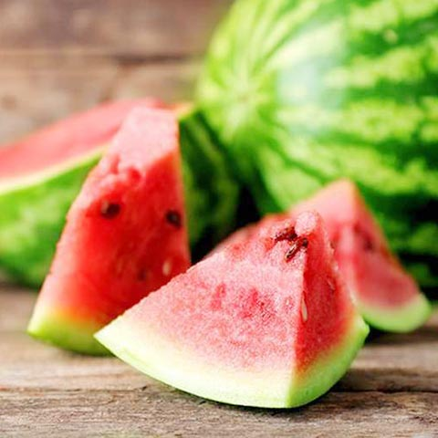

<!DOCTYPE html>
<html lang="zh-TW>
<head>
<title>四季水果</title>
<meta charset="utf-8">
<body>

 
<h3>西瓜 香甜多汁，被稱為「夏季瓜果之王</h3> 
<ul>
     <li>西瓜香甜多汁，消暑解渴，被稱為「夏季瓜果之王」。水分含量佔西瓜整體約94%，不含脂肪和膽固醇，</li>
<li>卻具備許多人體所需的營養素。傳統中醫認為西瓜味甘、</li>
     <li>性寒，助於解暑、止渴、開胃、利尿等。卻具備許多人體所需的營養素。傳統中醫認為西瓜味甘、性寒，助於解暑、止渴、開胃、利尿等。</li>
</ul>

<a href="2nd.html">第2頁</a>
<a href="3rd.html">第3頁</a>
<a href="4th.html">第4頁</a>
<a href="5th.html">第5頁</a>


</body>
</head>
</html>